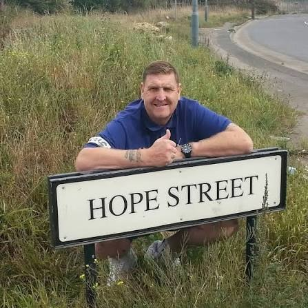

His story
Six days in a coma in 1996, a family told to expect the worst, and a promise Gram has kept every day since.
From the bench to the pulpitGram Seed was a Middlesbrough football hooligan, a heroin and crack addict, and a man who sat down on a park bench to die. Today he spends his life telling people in schools, prisons and churches that Jesus loves them, whatever they've done.

Gram gave his life to Jesus on an Alpha course in 1996. Now his story has been featured by Alpha. Watch the film on YouTube.
Six days in a coma in 1996, a family told to expect the worst, and a promise Gram has kept every day since.
From the bench to the pulpitGram speaks to young people at risk of going the way he went, and to men and women inside who need to hear there's a better way to live.
See where Gram worksA four-session course through Matthew 10 for ordinary Christians who want to share their faith without hype or pressure.
About the courseWhen Gram came round from his coma, he was told some young Christians had been praying at his bedside. His local church, the Oakwood Centre, encouraged him onto an Alpha course.
There he asked Jesus to show him, for real, that he was loved. If He did, Gram promised he would spend the rest of his life telling everyone that Jesus loves them too.
Thirty years on, he's still keeping that promise.
I don't remember standing up, but I did.
I didn't remember starting to cry, but I cried.
At the end of Gram's talk at Pioneer Camp in August 2014, a teenage Peter stood up and put his faith in Christ. Years later he texted Gram to tell him. He is now a trainee pastor in Rushden, Northamptonshire, studying at London Seminary.
“Talk to Jesus about people, before you talk to people about Jesus.”
Everyday Evangelism by Gram Seed. Four sessions with Gram, starting every month. No seminar, no formula, no hype.
In 1994 a rookie police officer met Gram outside a Middlesbrough chip shop and later sent him to prison. Years later, Gram baptised him.
Read the storyEvery prison visit, school session and late-night phone call is made possible by people who give and pray.
Ways to support Gram